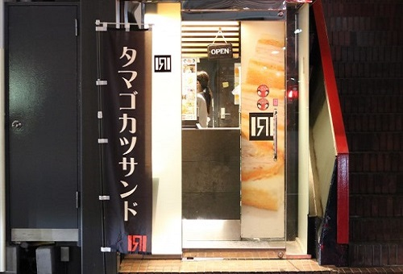

SHOP
北新地サンド ／ 店舗一覧
北新地サンド KITASINTISANDO

住所
〒530-0002 大阪府大阪市北区曾根崎新地１−２−１１ アレーナ 堂島
交通手段
JR北新地駅徒歩３分
北新地駅から161m
営業時間
18:00～翌4:00
アクセス
■カツサンド専門店 北新地サンド(曽根崎新地)へのアクセスは、JR東西線 北新地駅、大阪市営地下鉄四つ橋線 西梅田駅、京阪中之島線 渡辺橋駅が近くておすすめです。他にも、京阪中之島線 大江橋駅、大阪市営地下鉄谷町線 東梅田駅などからもアクセスできます。また、堂島薬師堂、マジックステージ ワンオーシックス、堂島アバンザなどのランドマークからもアクセスできる位置に在ります。
■アクセス方法
大阪市バス 103 桜橋 徒歩4分（280m）
大阪空港交通 関西空港リムジンバス 大阪駅前（梅田）周辺>>>大阪（伊丹）空港 大阪マルビル 徒歩4分（320m）
エムケイ MKナイトシャトル 京都・大阪⇔東京便 大阪梅田 徒歩4分（320m）
大阪市バス 103 堂島 徒歩4分（320m）
大阪市バス 103 梅田新道 徒歩5分（360m）